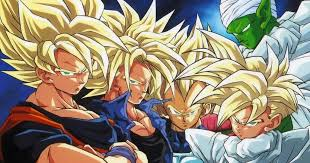

Evolução dos Animes Shonen
Três obras que definiram gerações
Este site apresenta a evolução dos animes shonen através de três grandes obras: Cavaleiros do Zodíaco, Dragon Ball Z e Bleach.
Cada anime teve um papel fundamental no universo da animação japonesa, influenciando gerações inteiras com histórias épicas, personagens memoráveis e batalhas inesquecíveis.
Destaque da Semana

Dragon Ball Z marcou uma geração inteira. As batalhas entre Saiyajins, a superação constante de limites e a amizade entre os personagens criaram uma base sólida para todos os shonens que vieram depois.
Com cenas icônicas como a transformação em Super Saiyajin e as batalhas no Planeta Namekusei, o anime se tornou referência mundial do gênero.
Conheça os Animes
O que é um Anime Shonen?
- Origem e significado
- Palavra japonesa que significa "jovem rapaz"
- Público-alvo: jovens entre 12 e 18 anos
- Originado nas revistas de mangá japonesas
- Características principais
- Protagonista determinado que sempre supera seus limites
- Amizade e trabalho em equipe como valores centrais
- Batalhas intensas e evoluções de poder
- Impacto cultural
- Popularizou os animes fora do Japão nos anos 90 e 2000
- Influenciou games, filmes e séries ocidentais
- Principais revistas de publicação
- Weekly Shonen Jump — a mais famosa do mundo
- Weekly Shonen Magazine
- Weekly Shonen Sunday